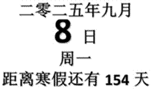
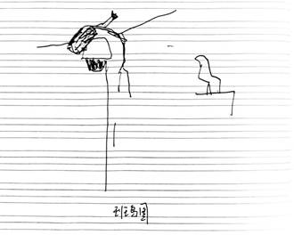
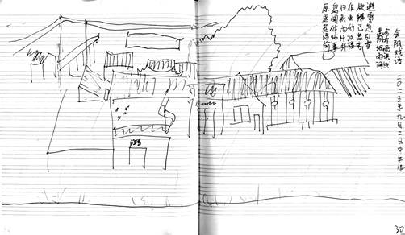
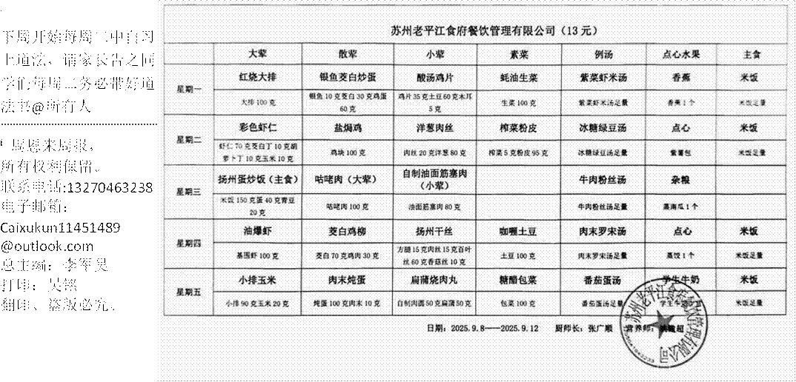

周恩来周报 第十一期我询问了班上部分学生。情况各不相同。以下是我班部分学生评价。
同学 A：一般。能吃。卫生。与上一家持平。我从来不看好任何一家的餐食。饭菜不好，但是摆盘得
（dei）好吧。这菜全都混到别的格子里了啊。
同学 B：良好。与上一家对比：优秀 就是饭有点少。同学 C：肯定是比上一家好一点。我就是觉得量少。
同学 D：[屎]。与上一家对比：屎盆子镶金边吧。
同学 E：嗯对，亚米（yummy）程度 10% 。与上一家对比：半斤八两。
同学 F：还可以吧但是菜有的时候有点少。我感觉没上一家的好。
同学 G：与上一家对比好些了。
同学 H：不知道 都挺差的。
同学 I ：与上一家对比简直是天堂地狱。太难吃了。
同学 J：猪食。与上一家差不多。
同学 K：饭少。没得吃。也吃不饱。
同学 L：现在这家非常良心，饭比上家少，菜比上家多，味道比上家重，还有小点心。
英语老师问了两位同学，都觉得难吃。
在缺点上。周一米饭太少；周二又少，又能吃上能用一个月的酱油；周三初见端倪，量更少；周四初见起色，但土豆丝是绿色的，还带有一股神秘的酸味；周五的娃哈哈 AD 钙奶跟口服液一样。此外，加饭添汤要到一楼，也能理解。但是你就不能直接把饭菜添加到饭盒里面吗？
在优点上。学校菜饭确实挺卫生的，价格便宜。对学生友好。学生拥有添饭的自由。营养丰富，种类全面。
以其好吃的饭菜从根源杜绝了学生浪费粮食的问题。
|
|
互 |
动：你认为那个菜最好吃？ |
|
|
|
番茄牛肉 |
香肠菜饭 |
茄汁龙利鱼 |
蚝油肉片 |
其他 |

震惊！我教室飞鸟九月四日周四体育课，我教室飞进来一直麻雀，在摄像头上搭窝。
英勇的同学们使用各种办法，终于将鸟儿赶出教室。据悉，该鸟儿是由于我学生距离教室太远，随机刷新而成的。也有学生对此表示担忧，害怕尿湿落下来。也有同学记录下来这一历史性时刻。见《班鸟图》。
改鸟为压抑的学习氛围提供了减压，让平凡的生活拥有不一样的色彩。
我们的网站 惠出众——洽隐山房 广告
https://apkqiu.oc.com.ar/availability 首次加载较慢，请谅解。 2025 洽隐山房所有权利保留

会阴戏语图这幅图描绘了九月二日的细雨。生动形象。附一首诗。诗曰：金乔雨琪钱，惠荫细雨间。避雷忽引雷，欲辨已忘言。作业行政楼，归来雨纤纤。忽闻体师事，原是英语前。
喜报！我同学胜利迎来开学！
当晨曦的第一缕光线掠过城市的天际线，一座座沉寂了两个月校园再度苏醒，仿佛一头蛰伏的巨兽，等待着吞噬我同学的自由与梦想。
我同学独坐床沿，目光空洞地望着窗外。空气中弥漫着新洗校服上刺鼻的洗衣液气味，那过分浓郁的香气仿佛在宣告着自由的终结。餐桌上摆着平日里最爱的菜肴，却味同嚼蜡。"明明都是喜欢的菜，却一口都咽不下。"
出门前的行装整理，俨然成为一场庄严的"殉道"仪式。我同学仔细挑选着每一样学习用品，如同挑选陪葬品般郑重其事。往常形影不离的手机，此刻也失去了往日的光彩，被随意扔到角落。"突然觉得手机也没什么好玩的，就是一种说不出的烦躁。"我学生的自白，折射出整个群体的集体焦虑。这种情绪在学生中蔓延成无形的网。
这是与老师博弈的暑假作业。面对未完成的暑假作业，学子们展现出惊人的语言创造力。
 |
这是经典语录的轮回。踏进教室，老师们那句经典的"既来之则安之"如期而至。这句话年复一年地在开学日回荡，既是一种安慰，也带着几分认命的无奈。学生们相视苦笑，仿佛在参加一场无法缺席的仪式。
这是课桌上的倒计时。我学生在课桌上发现了令人唏嘘的"时间遗产"。放假前用涂改液写下的"距离暑假还有 1 分钟"，如今成为刺痛双眼的讽刺。有学生在旁边添上："现在距离暑假还有 2 分钟"，用幽默化解着现实的无奈。
夕阳西下，放学的铃声终于响起。校门口车水马龙，与早晨的畅通形成鲜明对比。家长们焦急地张望，等待着自己的孩子从知识的殿堂中走出。
这开学第一日，既是假期的终曲，也是新征程的序章。在欢笑与压力的交织中，在期待与抗拒的碰撞里，青春完成了一次艰难的蜕变。那些课桌上的倒计时，老师口中的经典语录，以及学生们机智的辩解，共同构成了一幅生动的教育图景。
教育的真谛，或许就藏在这日复一日的轮回中，藏在每一次不情愿却又不得不前行的脚步里。当夜幕降临，台灯再次亮起，照亮的不仅是作业本，更是一代又一代人成长的轨迹。这就是开学日：一个充满矛盾却又不可或缺的人生节点，一场痛并快乐着的青春仪式。
|
诗歌鉴赏 |
||
|
如梦令李军昊 常记学校老树，开学不知归路。 乐尽乃开学，误入三楼生处。 飞舞，飞舞，池塘里一浮木。 |
如梦令·学校菜饭（有删改）李军昊 常记学校菜饭，量少酱油一半。 那天已吃完，同桌还没开饭。 米饭，米饭，发糕再来一瓣。 |
天净沙·初二李军昊 菜饭好吃爆炸，教室鸟儿安家，一排三列你爸。 有了你爸，题目不用害怕。 |
|
好文欣赏 |
||
|
（孙佳铭）一暑假，梦里不知身是客，一响贪欢，酿成祸端。夜来尽补作业，暑假之快，如花落耶！ |
||